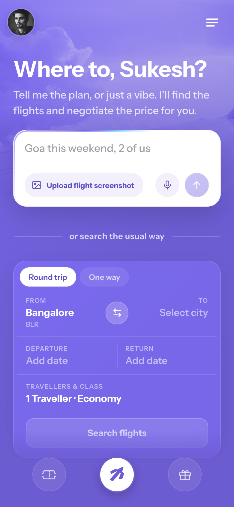
One intelligent search, and the usual one right below
Feeling: wait, what is this? → oh, I get it, and my usual way is still hereWhat the user sees first
The home screen leads with a new, easier way to search, and keeps the familiar one right below it. You can just speak or type your trip in plain words, paste a screenshot of a flight you already found, or use the normal search form everyone already knows. Nothing here asks anyone to learn a new way to book.
The features, and why each exists
- Speak or type, in plain words. "Goa this weekend, 2 of us" is enough. You can even be loose with dates, like "Mumbai to Delhi between the 4th and 6th," and the agent still gets it. No rigid fields to fill in.
- Helper text that teaches as you go. The placeholder quietly rotates real examples, so within a second the user sees they can just talk. No tutorial, no instructions to read.
- Paste a flight screenshot. If someone already has a flight in mind from another app, they drop the screenshot in and land straight on that exact flight, ready to negotiate. No retyping, no starting over.
- The usual search, kept right there. From / To, dates, travellers and class sit just below, under "or search the usual way," so the familiar path is always one glance away and nobody feels lost.
The feeling I designed for
Anything new usually gets the same first reaction: "wait, what is this, what am I supposed to do here?" So the screen answers that in the first second. The new, easier way is front and centre, the helper text shows exactly what to say, and the familiar form sits right below as a safety net. Because the user never feels lost, they relax and give the new thing a real try instead of retreating to what they know.
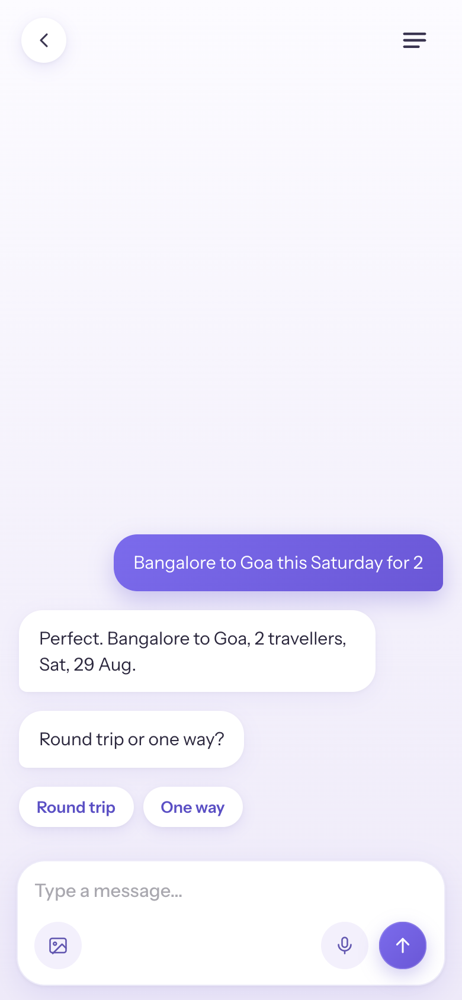
It starts a conversation with you, like a friend
Feeling: this isn't a tool, it's someone helping meWhy every entry leads to one place
The home screen offers a few ways to start, speaking, typing, pasting a screenshot, or using the form. But those are just entry points. Whichever one the user picks, it all continues in the same conversation. I didn't want one way in to open a conversation and another to drop you on a different screen. That is where a flow starts to feel broken and people get lost. So every entry leads to the same place, and the experience stays consistent from the first tap to the last.
Why it's a conversation, not a form
A conversation makes it feel like you are with a friend who works at the airline, not operating a tool. It talks back, repeats your trip so you know it understood, and stays in one calm thread the whole way. Finding a flight should feel like asking someone you trust to sort it out for you, not filling in software.
Why it reads from the bottom
The conversation sits low, in the thumb zone, where the hand naturally rests. Your first message and any quick choices (round trip, cabin) stay within easy reach so everything is one-handed, and the thread grows upward as it goes.
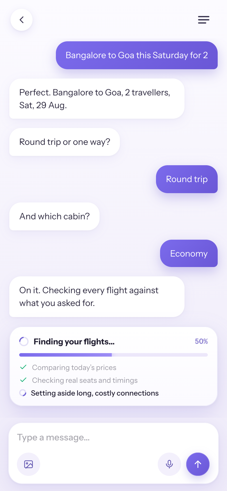
Finding your flights, showing the work
Feeling: nice, someone is on it for meWhat it does
A short, honest beat that surfaces the real work: pulling live fares across airlines, checking seats and timings, setting aside the long and overpriced ones.
Why it works
When you can see the work happening, you value the result more and trust it more. This isn't a fake loader, it's showing work that's really going on, so the shortlist that follows feels earned, not random.
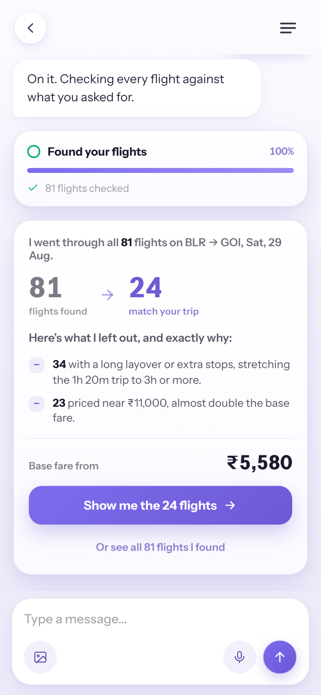
The reveal, from too many to just right
Feeling: relieved, I can trust thisWhat it does
Instead of dumping 81 results on the screen, Away shows the funnel. It went through all 81 flights on the route, then says exactly what it left out and why: 34 add a long layover or extra stops that stretch a 1h 20m trip past 3 hours, and 23 are priced near ₹11,000, almost double the base fare. It kept the 24 that make sense. Then the base fare from ₹5,580, and one button to see the shortlist.
Why this moment matters most
This is where people usually freeze: too many options, and it gets harder to feel good about any of them. Showing why each flight was left out answers the quiet worry "did it hide a better one?" You read the reasons, agree with them, and make the call yourself, which turns doubt into trust.
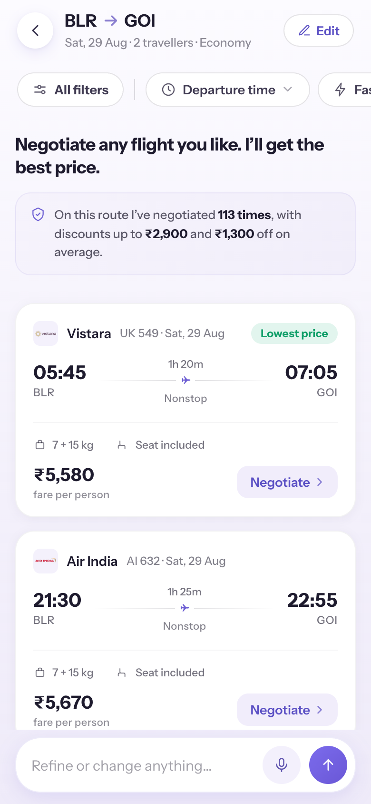
The list, the most important screen, kept calm
Feeling: calm, and there is no wrong choiceEvery element earns its place
- Generic, editable header (From → To · date · travellers · class). A familiar pattern that orients instantly and signals you can change anything.
- "Negotiate any flight you like." The headline sets the deal,you pick, it negotiates, and "any" removes the sense of a single-choice trap.
- Track-record banner ("negotiated 113 times, up to ₹2,900 off"). Quiet proof that the negotiation is real and works.
- Clean cards, one green "Lowest price" flag. A single standout instead of a wall of badges, so the cheapest fare is obvious without noise.
How it keeps things light
This is where flight-hunting normally gets stressful, so the screen's whole job is to feel light: a short, hand-picked set, one accent colour, plenty of space, and calm cards with no loud buttons fighting for attention. And choosing feels easy because the user arrives here already confident: the previous screen showed the junk being sifted out, so they land trusting that every option is already a good one.
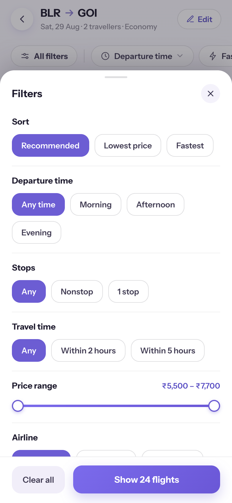
Filters, a few levers out, the rest tucked away
Feeling: in control, not overwhelmedWhat's out, what's tucked away
Only the filters people reach for most stay in the bar, Departure time, Fastest, and Lowest price. Everything else sits one tap away in a clean "All filters" sheet (Sort, Stops, Travel time, Price range, Airline), which shows a live count of how many flights match. It's the same pattern people already know from Airbnb and Blinkit.
Why so few up front
Putting every filter in the bar would be a wall of choices before the user has even looked. Keeping just the few they actually use out front, and the rest a tap away, makes it easy to decide without taking any control away from people who want more.
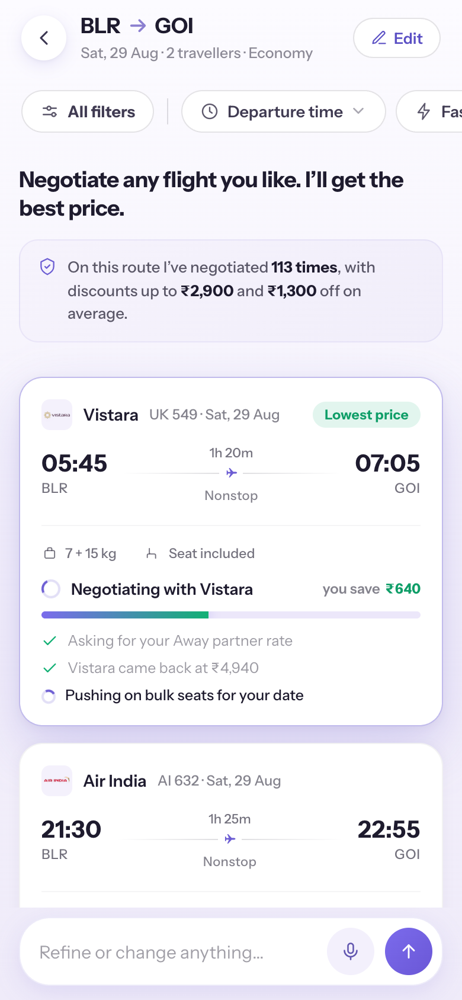
Negotiation happens right here, no page jump
Feeling: someone is fighting for me (the best bit)What it does
Tap a flight and the negotiation runs in place, on the card itself, a real-feeling back-and-forth (the airline's partner rate, bulk seats on your date, alliance & hidden-city fares) with the saving climbing live. The rest of the list stays exactly where it was.
Why the same screen makes it better
The user is never thrown into a separate flow, so nothing ever feels disconnected. And they're not locked into one pick, they can tap several flights and have the negotiations run at the same time, each on its own card, then watch the prices land next to each other to compare. It all stays on one screen, so the user gets to play with it, kick off a few at once, watch each saving climb, and feel the little rush of the prices dropping, then book the one they like best.
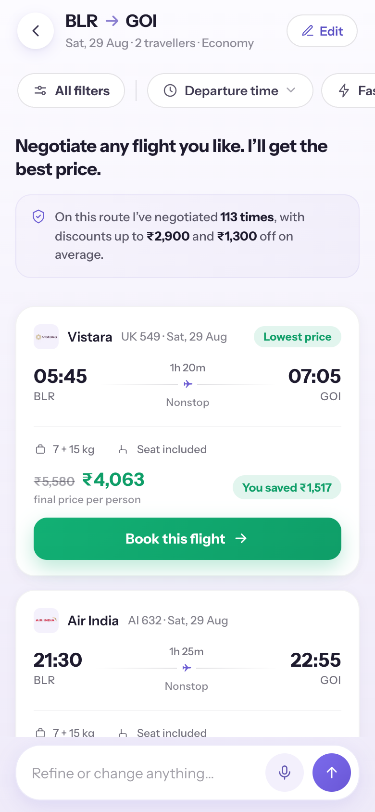
The win, made unmistakable
Feeling: yes, I got a dealWhat it does
The fare per person strikes through and the final price per person lands in green, with a clear "You saved ₹X" chip, then a single, warm CTA: "Book this flight."
The psychology
The reward is instant and real. Seeing the exact rupees saved makes all the waiting feel worth it and the choice feel smart, the moment the whole app is built to deliver.
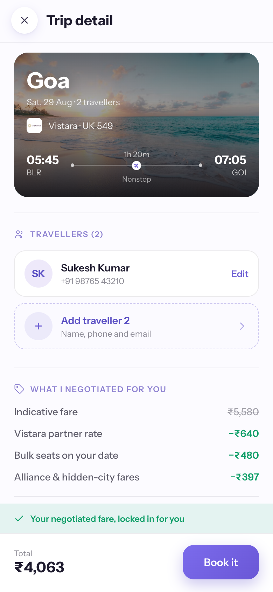
The details, all clear before you pay
Feeling: wait, is this legit? → okay, I feel safeWhat it does
Everything sits on one clear page before payment. Up top, the travellers on the trip, with the account holder already filled in and a tap to add anyone else. Below that, exactly what was negotiated, the airline partner rate, bulk seats, alliance and hidden-city fares, then seat, baggage, and "your negotiated fare, locked in." Nothing is added at checkout: the price you see is the price you pay.
The psychology
The one moment people get doubtful is right before the money leaves. Seeing who's flying, the full breakdown, and the same story the live negotiation told, all on one page, earns the last bit of trust.
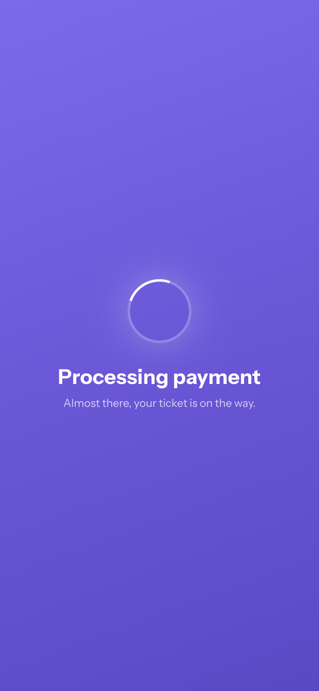
Payment, locking in your win
Feeling: the nervous wait, made calmWhat it does
By this screen the user has already committed to the amount, so the anxiety isn't about the price, it's "will it go through, and am I really getting my ticket?" The wait cycles through reassurances that answer exactly that:
- "Taking your payment securely…", the transaction is safe and in motion.
- "Confirming your seats with Vistara…", the airline side is happening too.
- "Your booking is going through…", the direct answer to "did it work?"
- "Almost there, your ticket is on the way.", the outcome is coming; sit tight.
The psychology
A plain spinner leaves you imagining the worst, paying and getting no ticket. Telling you what is actually happening (payment safe → booking confirmed → ticket on the way) removes the doubt and turns an anxious wait into a calm one.
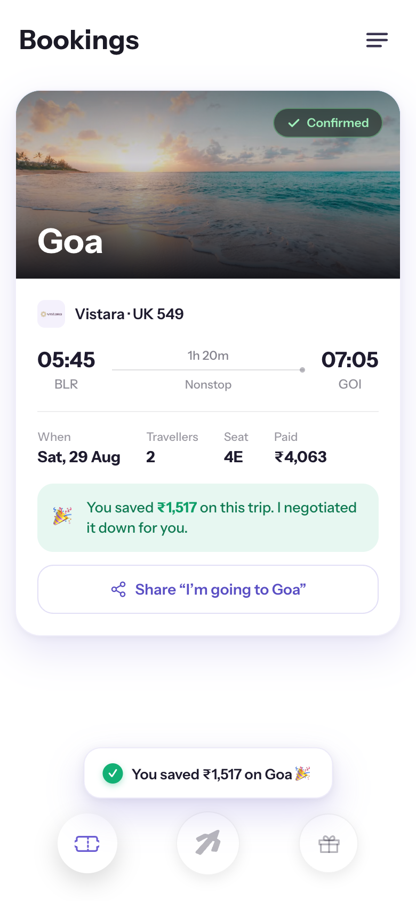
The ending, the second high point
Feeling: proud, and I am actually goingWhat it does
The destination in a real photo, a calm "Confirmed," the trip details, and the payoff front and centre: "🎉 You saved ₹1,517 on this trip. I negotiated it down for you," plus a one-tap "I'm going to Goa" share.
Why it closes the loop
People remember the last moment most. The app exists to save you money by negotiating, so the finish line celebrates exactly that, taking you from relieved to proud, and giving you something worth sharing.